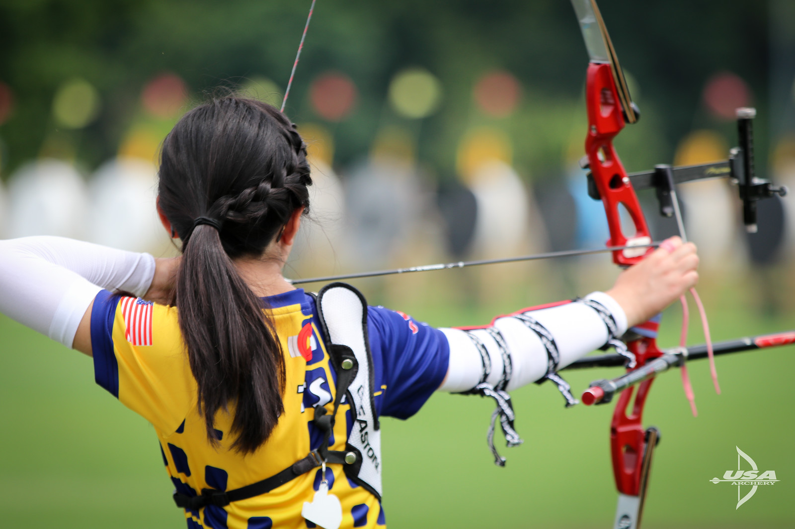

Get Archery Fit
Shooting arrows into the bull’s-eye consistently requires more than steady hands and an accurate bow. The muscles archers use to pull their bow to full draw and comfortably hold the bowstring at their anchor point differ drastically from those used in everyday life.
In fact, the strongest gym rats often struggle to draw bows of average weight if they’re unfamiliar with archery techniques and the sport’s primary muscle groups. If you understand the muscles that draw and hold your bow, and focus on them at the gym, you’ll increase your strength and shrink your groups. Let’s review archery’s all-important muscles:
Deltoids: The muscle cap at the arm’s highest point atop the shoulder is called the “deltoids.” It works in conjunction with other muscles as soon as you put tension on your bowstring and begin drawing. The deltoids don’t stop working until you release the arrow.
Many exercises strengthen your deltoids. The seated dumbbell press is an effective lift that isolates this muscle. As the name implies, you’ll need a set of dumbbells, but don’t lift more than you can handle. Start with a set of 5- or 10-pound weights, and find a staircase, workout bench or anything else that lets you sit comfortably. Hold a dumbbell in each hand, and lift them at the same time directly overhead 12 to 16 times. Then rest and do two more sets. By slowly increasing the weight while adhering to your workout regimen, you’ll strengthen the deltoids and draw your bow more easily.

Trapezius: The shoulder blades are an integral part of drawing your bow. The trapezius is the flat, wide muscle that covers the shoulder blade and helps it rotate whenever you use your shoulders to pull heavy objects.
A single-arm upright row helps strengthen your shoulder while increasing its range of motion. Holding a dumbbell in each hand, extend your arms directly out from your body to create a 90-degree angle at the shoulder. Alternately raise each arm from that angle to 180 degrees, essentially forming a straight line from your feet to the hand raised above your head. Besides strengthening your trapezius, you’ll stretch your rotator cuff.

Latissimus Dorsi: The latissimus dorsi lies beneath the trapezius and makes up the lateral sides of your back. This muscle supports your shoulder once you’re at full draw, and is especially important for steep-angled shots when you must bend at the waist.
An old-fashioned pull-up is a great way to exercise your latissimus dorsi while also strengthening your shoulders and arms as a cohesive unit. You can turn any closet or doorway into a workout space for pull-ups by installing a pull-up bar. By making this exercise part of your routine, you’ll soon notice that everything starts working together when pulling the bowstring to full draw.
Rotator Cuff: The rotator cuff is unique to our list because it’s the only muscle group to make the cut. The rotator cuff consists of several muscles that work together to strengthen your range of motion. It’s imperative that archers comfortably navigate their entire range of motion while reaching full draw.
Stretching is vital to a healthy rotator cuff, and it’s not difficult. Unlike the previous exercises, you don’t need any equipment to stretch this muscle group. Instead, use the doorway stretch to work your rotator cuff daily. Simply stand in the middle of a doorway with your arms extended to each side. Use the wall or doorframe to create tension against your arms, and then lean out while isolating your arms. Do that for several 15-second sets, and you’ll keep your shoulders healthy.
By identifying the muscles needed to reach full draw, and including exercises in your workout routines that target them, you’ll stay comfortable on the range rather than going home early with muscle fatigue. At the same time you’ll improve your posture and overall wellness.
#Article from Archery 360 Magazine